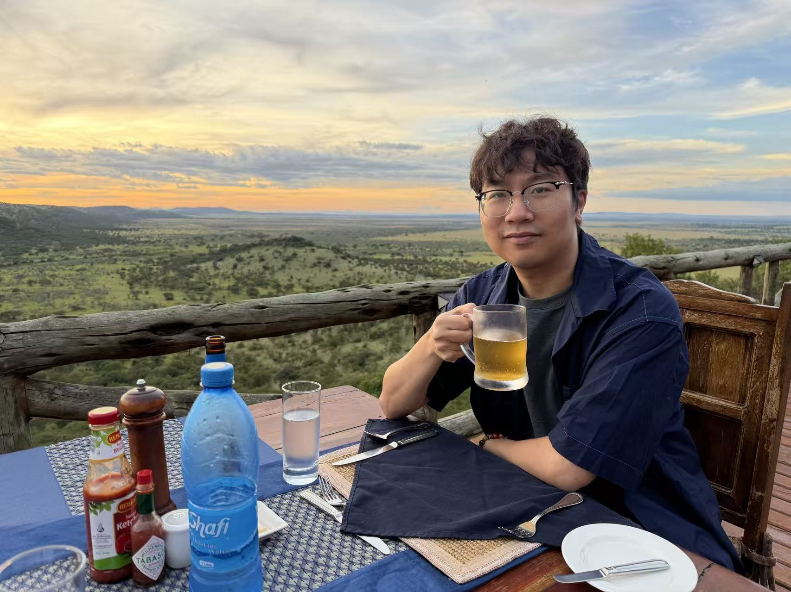

Research Focus
My work connects experiments, simulations, and theory to understand how local interactions, geometric constraints, and nonequilibrium pathways determine the morphology of soft matter.
SOFT MATTER · NONEQUILIBRIUM DYNAMICS · PROGRAMMABLE MATERIALS
I am a physics researcher at Fudan University studying geometrically frustrated and confined soft matter, nonequilibrium assembly of mesoscale particles, and AI-assisted inverse design of programmable materials.

My work connects experiments, simulations, and theory to understand how local interactions, geometric constraints, and nonequilibrium pathways determine the morphology of soft matter.
Department of Physics, Fudan University
Shanghai, China
fangh@fudan.edu.cn
Google Scholar ·
ORCID
Selected Work